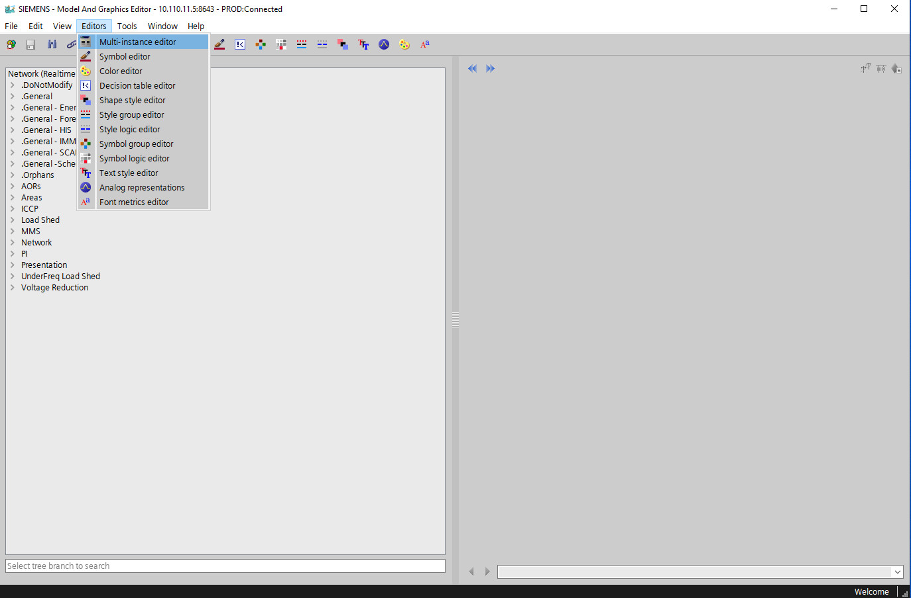

IMM-MAGE es la nueva plataforma desarrollada por el equipo de expertos de SIEMENS y recientemente adquirida por el CENACE para la gestión de la base de datos que conforma el modelo matemático del SEN. Si bien, esta es una herramienta muy poderosa, su uso cotidiando nos ha permitido detectar errores en el modelo que la aplicación deja cargar sin emitir alertas o bloquear los procesos de actualización. Otra necesidad adicional, es la tarea de confirmar la integridad de la información después de la activiación de nuevos jobs, asegurandonos que los nuevos cambios que se integran no tendrán repercusiones graves en el modelo de red física y subsecuentemente en el modelo de red comercial.
La herramienta de validación para IMM-MAGE se convierte en la predecesorá del checklist que se aplica para la validación de la integridad en la base de datos de SITRACEN. Esta nueva herramienta tiene un proposito similar al checklist, sin embargo, los paradigmas de ambos sistemas de información son muy diferentes y las limitaciones y alcances que cada uno de ellos tiene también difieren bastante. Hablando de IMM-MAGE, una de las afectaciones más importantes es la incapacidad que tenemos para realizar conexiones directas a la bases de datos, esta limitante nos obliga a exportar las tablas de modelo de forma manual (un trabajo tedioso y que aumenta la posibilidad de introducir errores humanos al proceso). Por el momento, es la unica forma que tenemos disponible para obtener información de modelo de IMM-MAGE y, aunque es tediosa, se buscó desarrollar una métodología de validación y exportación de datos que redujerá en la medida de lo posible la cantidad de operaciones manuales que deben realizarse para el completar el proceso.Hasta este momento, la herramienta esta diseñada para realizar las siguientes validaciones:
Estas validaciones son importantes para el correcto comportamiento del sistema y aunque en un inicio su desarrollo se vió motivado por el proceso de congelamiento y exportación de la base de datos de producción para la inicialización de OTS, hoy en día se han convertido en parte fundamental del proceso diario de activación y verificación de jobs.
Dependiendo del sistema que se desea procesar, la exportación de datos se podrá realizar desde los servidores de calidad o de producción, de la misma manera la conexión deberá realizarse a GCN o GCA dependiendo de los servidores que se encuentren disponibles y de la disponibilidad de conexión a cada uno de ellos.
La conexión se debe realizar desde las consolas del sistema SP7, para elegir un servidor y un ambiente de la forma más sencilla se recomienda usar la herramienta provista por el equipo de SCADA. Esta herramienta se llama Ejecutar Ambientes SP7 y con un doble click en el icono despliega una intefaz como se muestra a continuación
Utilizar la interface es muy intuitivo, solo es necesario elegir un ambiente y un servidor para MAGE. En caso de tener alguna duda sobre como configurar el programa o como utilizar algunas de sus funciones adicionales, se recomienda leer el manual que viene incluido con el software y cuyo nombre es Manual Ejecutar ambientes SP7. Una vez que se elige una instancia de MAGE es necesario ingresar las credenciales del usuario y dar click al botón ok para concretar la conexión. La terminal de inicio de sesión es similar a la que se muestra a continuación.

Una vez que se haya ingresado será necesario exportar la información requerida, para esto no es necesario crear un nuevo job, lo más común es abrir el visor de tiempo real. Esto se lográ con un doble click en cualquiera de las posiciones que se muestran en la siguiente imagen.

Ya que esta abierta la ventana de tiempo real, para abrir el multi-instance editor se sigue la ruta editor/multi-instance editor. Para mayor referencia puede apoyarse de la siguiente iamgen.

El multi-instance editor sirve para realizar consultas de uno o más tipos de elementos de MAGE. Esta ventana tiene dos secciones principales, la primera es el área de queryes; en esta sección se seleccionan los elementos y atributos que se desean agregar a los querys de busqueda, en segundo lugar está el área de resultados; en esta sección se muestran registros resultado de la aplicación de los queries y se encuentran los botones de filtrado y exportación de datos.
Esta herramienta es útil y poderosa, sin embargo, resulta muy laborioso exportar grandes cantidades de información, afortunadamente, el propio multi-instance editor cuenta con una utilidad más, la cual permite introducir querys en modo de texto. Para habilitar el modo de editor de texto solo es necesario marcar el checkbox que hace que la herramienta cambie entre el modo Wizard Editor y Query Editor.
En el Query Editor se copia el query o grupo de querys que se quieran consultar a la base de datos, una vez cargado el query, se procede a dar clic en el boton Execute para iniciar la consulta, se recomienda también aumentar el limite a 1000000 rows para evitar el truncamiento de algunos datos. Una vez terminada la consuta, el programa creará un panel de consulta por cada query realizado, a menos que se habilite el checkbox combine single-type tables, en cuyo caso se uniran las tablas compatibles en un solo panel

La etapa final del proceso de exportación de datos consiste en la creación de los archivos csv, para realizar este paso es necesario elegir alguna de las pestañas en el área de resultados, una vez ahí, se selecciona el icono de archivo csv y se da clic en all data, se abrirá una ventana para escoger el nombre y la ubicación del archivo, después de proporcionar está información y dar clic en aceptar, el proceso habrá terminado.